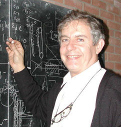
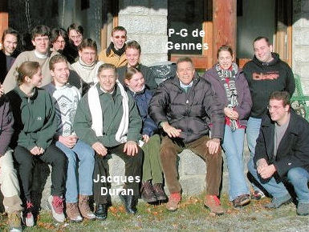
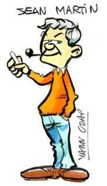
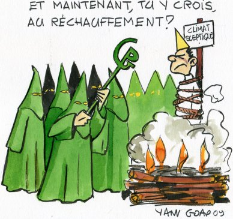

( 21 Avril 2010) : Mais qui est Jean Martin ?
Cher(e)s (et fidèles) lecteurs(trices), Compte tenu de l'évolution positive de la pensee-unique qui ne l'est plus, ou qui l'est moins, puisque l'existence des "sceptiques "est désormais reconnue à défaut d'être bienvenue, j'ai décidé de dévoiler mon identité. En effet, comme vous l'aviez deviné (je ne l'avais pas caché), Jean Martin n'était qu'un nom de plume (voir ci-dessous).  Jean Martin est, en réalité, Jacques Duran. Je suis DR1, Directeur de Recherche de première classe du CNRS en retraite depuis 2004, ancien Directeur des Etudes (1996-2003, maintenant Honoraire) de l'Ecole Supérieure de Physique et Chimie de Paris (ESPCI), auprès de Pierre-Gilles de Gennes, et ancien Vice-Président, Chargé de la Recherche, de l'Université Pierre et Marie Curie (1986-1992). J'ai été successivement Directeur de deux laboratoires associés au CNRS (de 1981 à 1994) : l'URA 800 (Laboratoire d'Optique de la Matière Condensée) puis de l'UMR 800 (Laboratoire d'Acoustique et d'Optique de la Matière Condensée qui résultait de la fusion de l'OMC avec l'ancien Laboratoire d'Ultrasons URA 799), à Jussieu. Vous trouverez quelques infos utiles sur mes activités successives et mes publications récentes (liste complète) et anciennes (une sélection), ainsi que sur les livres que j'ai écrits, dans mon ancien site professionnel à l'ESPCI (style rétro WEB 1.0 !) que j'avais rédigé en 2002 (version modernisée en Web 2.0 ici) pour satisfaire à la demande d'un referee (relecteur) américain. Bien entendu, vous pouvez aussi utiliser Scholar Google ou faire des recherches avec Google sur J. ou Jacques Duran (sans d ni t), chercheur, CNRS, ESPCI etc. Il n'y a, à ma connaissance, très peu ou pas du tout, d'homonyme (avec Duran sans d ni t) qui soit physicien. Pourquoi avoir utilisé l'anonymat ? -En matière de Science, il existe un grand principe : Il n'y a pas d'argument d'autorité. Ce qui importe ce sont d'abord les observations et les mesures, puis les théories et les calculs, éventuellement numériques. L'autorité supposée de celui qui les rapporte (avec des sources vérifiables) s'efface devant le contenu des informations. A la différence de certains qui abusent de leurs diplômes pour emporter la conviction (comme si les gens diplômés ne commettaient pas d'erreur !), je ne voulais pas utiliser l'argument d'autorité pour convaincre. Les faits devaient suffire, me semblait-il. S'il ne suffisaient pas, j'abandonnerais, pensais-je à l'époque.. Pourquoi avoir choisi le pseudo "Jean Martin" ? Jean Martin est le nom d'un des personnages (presque) fictifs de mon dernier livre publié chez Belin "Passion Chercheur" en 2005 . C'était un clin d'oeil à ceux qui avaient lu ce livre. 
Pierre-Gilles de Gennes a été un ami de 40 ans, jusqu'à son décès en 2007. J'ai d'abord été son jeune élève (en physique quantique) à l'école. Il m'a beaucoup aidé et encouragé durant mes premiers travaux sur la diffusion de l'énergie dans les matériaux désordonnées isotopiques lorsque j'étais jeune chercheur à l'ESPCI (Equipe de Recherche N°5 du CNRS). Nous nous sommes rencontrés ensuite, à plusieurs reprises, au cours des années suivantes, notamment à propos des recherches que nous poursuivions sur le physique de la matière granulaire. Pourquoi avoir entrepris la rédaction de ce site sur la Pensée Unique Scientifique en 2006 ? En 1998, un des collègues du laboratoire de Jussieu au sein duquel je poursuivais mes recherches (en physique de la matière désordonnée) a attiré mon attention sur le fameux article décrivant la "crosse de hockey" publié dans Nature par Michael Mann et al. J'étais tellement surpris de ce résultat qui allait à l'encontre de tout ce que nous savions (y compris le GIEC de l'époque qui se reposait sur la courbe de Lamb) sur le climat des temps passés que j'ai commencé à examiner systématiquement les publications scientifiques relatives au réchauffement climatique qu'on disait anthropique. Etant membre d'une Université (PVI) qui avait accès à pratiquement tout ce qui se publie dans ce domaine, j'ai consacré une grande partie de mes loisirs à parcourir la littérature sur ce sujet, jusques et y compris les volumineux rapports du GIEC, surtout ceux du WG1. A vrai dire, je n'ai pas cessé de le faire depuis cette époque... et un retraité dispose de beaucoup de temps libre. De manière générale, comme beaucoup de mes collègues qui ont suivi la même démarche, j'ai été frappé par la quantité considérable d'incertitudes et d'approximations qui grèvent de nombreuses facettes de la "science climatique". Pour moi qui venait d'une science dite dure, cela a été une surprise même si on peut le comprendre compte tenu de la grande complexité des problèmes relatifs au climat. En bref, et au vu des articles qui paraissent dans les grandes revues de climatologie ou de sciences connexes, une partie importante de la recherche reste ignorée du grand public, des médias et, peut-être aussi, des scientifiques proches du GIEC. ______________________________________________________________________________________________ Je profite de ce billet pour remercier les très nombreux(ses) lecteurs et lectrices qui m'ont suivi et encouragé au cours de ces quatre années écoulées et ceci en dépit de mon anonymat qui ne les gênait guère. Seuls le textes, les courbes, les graphiques les intéressaient. Un grand merci aussi aux nombreux scientifiques, de tous les domaines, qui représentent près de 50% de mes lecteurs, qui m'ont fait bénéficier de leurs apports, de leurs remarques, de leurs questionnements et de leurs encouragements. Comme je l'ai déjà écrit, en réalité, Pensee-unique.fr est le résultat d'un travail collectif qui a bénéficié de nombreuses contributions. Parmi les quelques 20000 courriers symapthisants que j'ai reçus et auxquels je me suis efforcé de répondre quand je l'ai pu, certains m'ont plus particulièrement touché. Ce sont ceux qui me racontaient en substance qu'ils avaient reçu une formation scientifique qu'ils avaient dû abandonner pour exercer un autre métier et qui me disaient que la lecture de Pensee-unique.fr les avaient réconciliés avec la Science et qu'ils étaient devenus des passionnés. A vrai dire, et quel que soit l'état du débat en cours, rien ne pouvait me faire plus plaisir...On ne consacre pas quelques quarante cinq années de sa vie à la recherche scientifique sans être heureux quand d'autres viennent partager votre passion. Quant à ceux (très rares, heureusement) qui, au cours de ces années, ont profité de mon anonymat (et du leur) pour qualifier l'auteur de Pensee-unique.fr dans les forums ou dans les blogs, de "charlatan, usurpateur, imposteur, nul, incompétent, (j'en oublie sûrement)" etc. ou encore, tout récemment, de "gogo" et de "Jean-le-Menteur" (d'un journaliste), je ne ferai aucun commentaire, sauf à remarquer que leur pratique d'internet est à l'image de leurs connaissances scientifiques. Pour la petite histoire, bravo aux quelques rares "Sherlock Holmes", en général scientifiques, qui ont deviné ma véritable identité à partir du texte initial, volontairement sibyllin, que j'ai conservé ci-dessous pour que chacun puisse vérifier que tout y était parfaitement exact. L'un d'entre eux, particulièrement futé, a trouvé mon identité en partant (avec Scholar Google) du simple fait que je déclarais avoir écrit plusieurs Phys. Rev. Lett., puis en procédant par élimination avec les autres éléments. (Chapeau, Benoît !). D'autres qui auraient pu le faire et qui s'intéressaient surtout à mon identité, plutôt qu'au texte, ne l'ont pas fait. Tout bien réfléchi, peut-être préféraient-ils que je conserve mon anonymat ? Qui sait ? Au cours des années écoulées, un certain nombre de lecteurs de pensee-unique.fr, m'ont demandé les références des livres que j'avais publiés. Les voici (Vous trouverez plus de détails sur mon site personnel) Sables, Poudres et Grains : Introduction à la physique des matériaux granulaires (J. Duran, préface P-G De Gennes- Eyrolles-Sciences- deuxième tirage 1999. La collection a disparu et ce livre n'a pas été réédité depuis lors. Une version preprint en pdf est accessible à partir du site ESPCI). Niveau 3ème cycle. Avec mes amitiés Jacques Duran PS : Je précise que vous pourrez continuer à écrire à Jean Martin. Cela permettra de ne rien changer pour les boites à lettre. |
Texte initial : Jean Martin : Qui suis-je ? (Présentation 2006) Là, je crains de porter un rude coup à la moyenne d’âge de la communauté des blogueurs qui doit tourner autour de 27 ans, si j’en crois certaines statistiques. Voilà. Je l’avoue : Je suis un chercheur scientifique. En retraite depuis peu, il est vrai. Mais la passion de la recherche ne vous quitte jamais, même après la cessation d’activité, si l’on peut dire, car c’est une sorte de virus et on continue d'être curieux de tout, même quand on n’est plus payé pour cela. Carrière typique de chercheur : grande école scientifique, thèse, Doctorat, intégration au CNRS, service militaire, etc. J’ai terminé comme Directeur de Recherche CNRS après avoir dirigé deux laboratoires associés au CNRS et exercé des responsabilités à l’Université et en grande école. Je continue mon activité scientifique en aidant tous ceux qui me le demandent. J’ai toujours été convaincu qu’un chercheur ou un enseignant ne devait pas rester dans sa tour d’ivoire et essayer de faire connaître et aimer la science par le grand public. Je suis très loin d’être célèbre comme Hubert Reeves, par exemple, mais j’ai été interviouvé de nombreuses fois à la radio ( France Inter, France Culture, France Info, RFI, Europe, Radio Canada etc.) et à la télé (Arte, FR3, chaîne météo...). Et puis, j’ai commis quelques livres, pour la plupart scientifiques. Certains d’entre eux sont accessibles au grand public que j’espère avoir convaincu que la science est abordable et, surtout, qu'elle est faite pour eux et rien que pour eux. Alors, pour en revenir à ce site WEB, je ne sais pas si je suis le Papy des bloggers mais ce qui est certain, c’est que je suis un fan d’Internet et de l’informatique depuis le tout début. Imaginez, -vous les jeunes branchés de l’info.-, que j’ai commencé à écrire des programme en langage Fortran IV sur des cartes perforées et à travailler sur un IBM 1130 (dans les musées maintenant)! J’ai même eu la chance de pianoter sur le clavier de l'exemplaire IBM Personal Computer 0001, c’est à dire le tout premier IBM-PC de l'histoire lors d’une visite chez IBM à San Diego en Californie. Mes collègues qui s’étaient vus dotés de ce prototype (qui avait pour toute mémoire à l’exception d’un petit BIOS, une disquette souple et fragile que l’on appelait floppy disk), le regardaient avec beaucoup de mépris et se demandaient bien ce que l’on pouvait bien faire avec un engin aussi primitif. Et nous n’imaginions pas l’avenir extraordinaire qu’allait connaître cet horrible boîtier parallépipédique en métal qui sentait le bricolé et ne savait “presque” rien faire, à part écrire comme une vieille télétype à perforer les cartons... La venue d’Internet a été pour moi un événement extraordinaire. D’abord, s’ouvre devant nous un fond de bibliothèque dont la richesse est inimaginable. On peut TOUT trouver sur le WEB ! Certes, il faut rester vigilant car tout n’est pas d’un grand sérieux, mais quelle richesse ! Je me suis abondamment servi du fond de documentation accessible sur Internet pour documenter mes livres. Lors de mes vérifications, je me suis amusé à comparer les renseignements apportés par Internet par rapport à ceux que l’on trouve dans les grandes et célèbres encyclopédies. Il n’y a pas photo! Internet est infiniment plus riche et plus détaillé. L’apport du multimédia est incomparable dans de nombreux cas. Oui, Vive Internet pour celui qui veut enrichir ses connaissances. C’est, à mon avis, ce que l’on devrait d’abord apprendre à nos jeunes écoliers. Et puis, surtout, Internet, c’est la liberté. La liberté de s’informer et d’informer aussi. La liberté d’échanger ses idées avec les autres sans passer par les médias habituels dont on sait qu’ils sont largement biaisés par le très inquiétant phénomène de concentration des média comme je le rappelle dans la section médias. Alors, vous demandez vous, en quoi un scientifique est-il habilité à écrire un blog contre la Pensée Unique ? Eh bien, tout simplement par déformation professionnelle : La première qualité d’un chercheur, c’est de ne rien considérer comme acquis, de remettre sans cesse en question les idées reçues. Sans esprit critique, point de découvertes, point de progrès. Le scientifique est extrêmement difficile à convaincre et je dois dire, comme beaucoup de mes collègues, que je suis assez irrité par les affirmations et les approximations que l’on entend ou lit sur les médias ou encore, dans la bouche de nos décideurs. Pour éviter tout malentendu, laissez moi ajouter que mes propos souvent iconoclastes ne sont sponsorisés rigoureusement par personne ! Hélas ! Compte tenu de l'ambiance actuelle qui érige en grand satan et menace du bûcher tous ceux qui osent émettre le moindre doute sur la Pensée Unique, je me dois d'apporter quelques précisions complémentaires pour ceux qui voudraient me faire passer pour un affreux destructeur de la planète : Bien au contraire, je suis un grand amoureux de la Nature et je vis à la campagne (à la différence de beaucoup d'écologistes théoriciens : la Nature, je connais !)! Je protège les animaux sauvages et notamment les oiseaux que je nourris pendant l'hiver. Je plante des arbres et des haies. Je mange presqu'exclusivement du bio comme les légumes et les fruits (non traités) qui poussent dans mon jardin que j'arrose avec des systèmes économiseurs d'eau. Je fais des économies d'énergie (doubles vitrages, isolation parfaite, ampoules économiques etc.). Je me chauffe, en grande partie avec du bois (énergie renouvelable diront certains !). Je milite dans une association qui refuse les méthodes d'ensemencement de nuages pour altérer le pluviométrie. Je suis un partisan convaincu de la limitation de nos dépenses d'énergie fossile qu'il ne faut plus utiliser qu'à bon escient, etc. Bref, je mérite largement mon brevet du parfait petit écolo sur le terrain. Mais ... Il y a une chose que je ne supporte pas : A la différence de certains (voir : pour quoi faire ?), je ne crois pas que la fin justifie les moyens, même si l'on pense qu'il s'agit de sauver la planète : En utilisant une science inaboutie, on peut faire beaucoup plus de mal que de bien. S'il y a un débat scientifique sur une question, il faut l'accepter et ne pas le cacher. Un débat scientifique doit le rester et ne pas servir des (ou ses) idéaux partisans et (ou) économiques. La déontologie de la Science, c'est exclusivement de chercher et faire connaître la Vérité où, plus exactement, ce que l'on sait et ne sait pas, sans esprit de parti pris. Pour tous les hommes (et pour la planète). Lorsqu'un résultat est avéré et seulement lorsqu'il l'est, c'est aux hommes d'en tirer les conséquences en connaissance de cause ! Toute précipitation en la matière est potentiellement source de catastrophes... Enfin, que ceux qui mettraient perfidement en doute mes capacités de jugement scientifique, sachent que je suis l'auteur de plus d'une centaine d'articles publiés dans des revues à comité de lecture (dont plusieurs Physical Review Letters), de dizaines de contributions dans des livres scientifiques et que j'ai publié, sous mon seul nom, cinq livres scientifiques en français, et (ou) anglais, hollandais et japonais. J'ai été referee (arbitre) officiel d'une bonne douzaine de revues internationales dont Physical Review Letters, Physical Review B, New Journal of Physics (UK), Journal de Physique (Fr) etc . ainsi qu'expert à la NASA. J'ajoute que j'ai enseigné pendant plusieurs années en troisième cycle en Université. Je peux sans doute me tromper comme tous mes collègues mais qu'on me laisse, au moins, le bénéfice de la bonne foi ! |